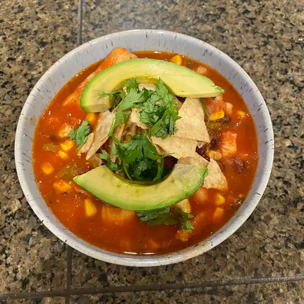

Chicken Tortilla Soup
Chicken Tortilla Soup Recipe

A nice chicken tortilla soup for a nice autumn.
This is one of my favorite recipes for dinner as
you will always have some left over for lunch the
next day. If you have the time, I highly recommend
trying it out. I promise that you won't regret it.
- 1 tablespoon olive oil
- 1 medium onion, chopped
- 3 cloves garlic, minced
- 1 (28oz) can crushed tomatoes
- 1 (10.5oz) can condensed chicken broth
- 1 1/4 cups water
- 1 (15oz) can black beans, rinsed and drained
- 2 large boneless chicken breast halves, cooked and cut into
bite-sized pieces
- 1 cup whole corn kernels, cooked
- 1 cup white hominy
- 1 (4oz) can chopped green chile peppers
- 1/4 cup chopped fresh cilantro
- 1/2 cup crushed tortilla chips, or to taste
- 2 medium avocados, sliced, or to taste
- 1/2 cup shredded Montery Jack cheese, or to taste
- 2 tablespoons chopped green onions, or to taste
So, in order to make this recipe you will want to follow these steps carefully.
- Heat oil in a stockpot over medium heat. Add onion and garlic; saute
until soft, about 5 minutes. Stir in crushed tomatoes, condensed broth,
water, chili powder, and oregano; bring to a boil. REduce heat and
simmer for 5 to 10 minutes.
- Stir in black beans, cooked chicken, corn, hominy, chile peppers, and
cilantro. Simmer for 10 minutes.
- Ladle soup into individual serving bowls, and top with crushed tortialla
chips, avocado slices, Monterey Jack cheese, and green onions.